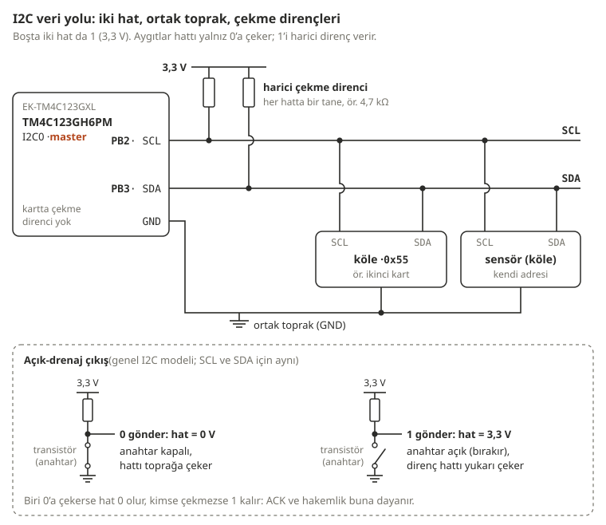
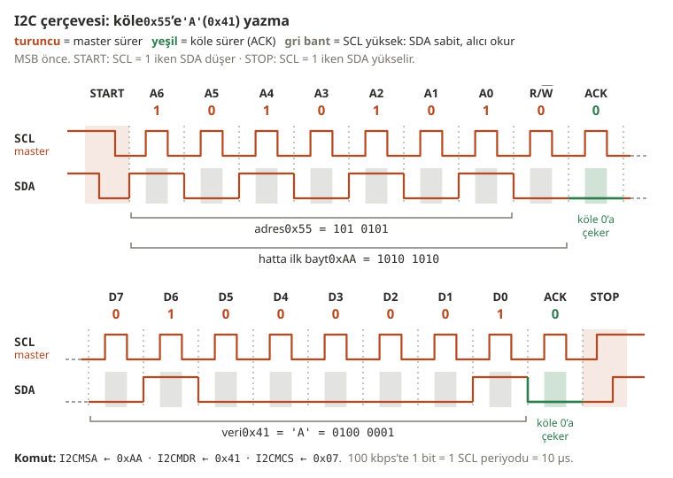
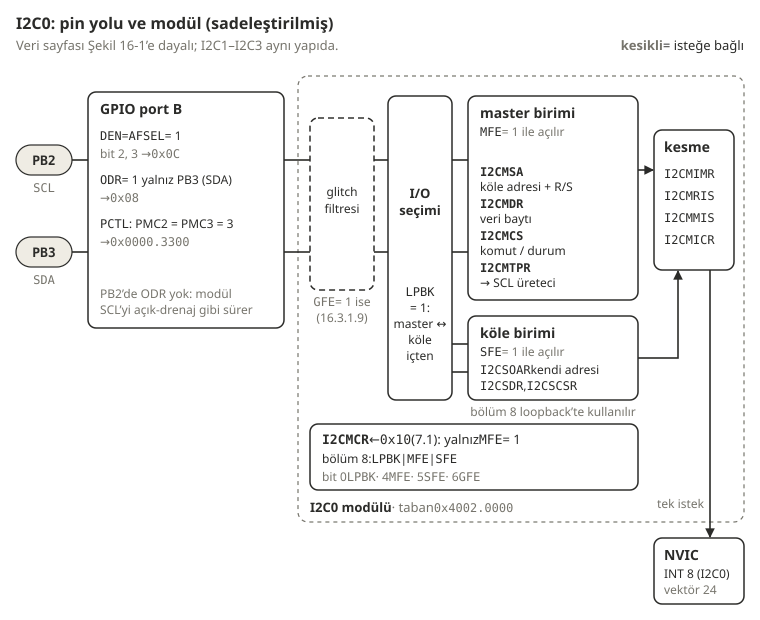
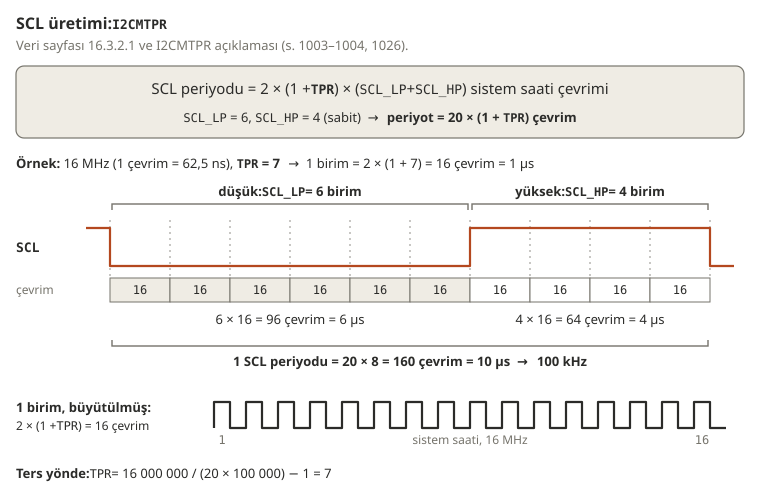
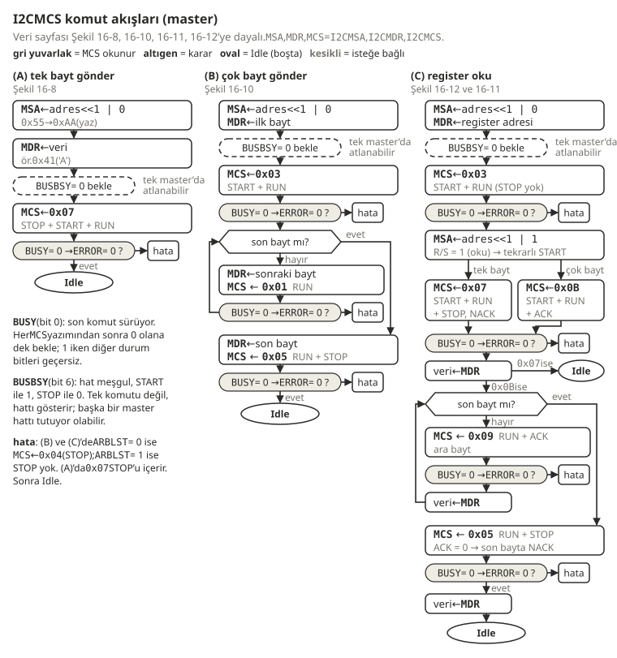

I2C (Inter-Integrated Circuit)
Bir sıcaklık sensörü, bir EEPROM, bir gerçek zaman saati: hepsini mikrodenetleyiciye yalnız iki telle bağlamak mümkündür. I2C (Inter-Integrated Circuit) bunu adreslemeyle yapar: hattaki her köle kendi adresini duyunca yanıt verir. Bu notta I2C'nin elektriksel yapısını ve çerçevesini, TM4C123GH6PM'nin I2C modülünü, SCL hızını, 12 adımlı başlatmayı ve master komutlarını öğrenecek, LaunchPad'den 0x55 adresli bir köleye (derste bir Arduino) bayt gönderip okuyacağız.
0. Amaç ve öğrenme kazanımları
Bu notun amacı, LaunchPad'deki I2C0 modülünü (PB2 = SCL, PB3 = SDA) master olarak kurup bir köleye bayt yazmak, köleden bayt okumak ve bir köle register'ını tekrarlı START ile okumak, her adımda işlemin bitmesini bekleyip hatayı denetlemektir. Bu notun sonunda öğrenci:
- I2C veri yolunun iki telini, açık-drenaj yapıyı, çekme dirençlerini ve 7 bitlik adreslemeyi açıklayabilir, I2C'yi UART ve SPI ile karşılaştırabilir.
- Bir I2C çerçevesini bit bit çizebilir.
- PB2/PB3'ü I2C için doğru ayarlar (AFSEL, DEN, yalnız SDA'da ODR, PCTL = 0x0000.3300) ve MCS register'ının okunurken ve yazılırken farklı anlamlar taşıdığını bilir.
- İstenen SCL hızı için TPR değerini hesaplar, TivaWare'in nasıl yuvarladığını bilir.
- Veri sayfası 16.4.1'in 12 adımını register düzeyinde (API'siz) ve TivaWare ile (API'li) uygular.
- Tek bayt, çok bayt ve register okuma için MCS komutlarını seçer, BUSY'yi bekler, hatada STOP verir.
- Geri döngü kipiyle kartta ek donanımsız deneme yapar, ders kodlarındaki hataları bulabilir.
1. I2C nedir?
Amaç: veri yolunun elektriksel yapısını, adreslemeyi ve hızları tanımak.
I2C iki telli, eşzamanlı (saatli), yarı çift yönlü bir seri veri yoludur. SCL (serial clock) saat, SDA (serial data) veri hattıdır. İkisi de iki yönlüdür. Veri yolu, iki hat da yüksekken boştadır (§16.3.1, s. 999). Hatta iki tür birim vardır:
- Master (ana birim): iletişimi başlatır, SCL'yi üretir, START ve STOP koşullarını oluşturur. Bu notta LaunchPad masterdır.
- Köle (İngilizce slave): kendi adresini duyunca yanıt verir. Derste köle, 0x55 adresine ayarlanmış bir Arduino'dur.
Her köle 7 bitlik bir adresle seçilir (s. 997). Birden çok masterın aynı anda başlaması hakemlikle (arbitration) çözülür (Bölüm 2).
Açık-drenaj ve çekme dirençleri. Hattaki hiçbir birim hattı yükseğe sürmez. Her birim hattı yalnız düşüğe çekebilir ya da bırakabilir (açık-drenaj, open-drain). Bırakılan hattı bir çekme direnci (pull-up) besleme gerilimine çeker. Böylece iki birim aynı anda farklı değer yazmaya kalkarsa kısa devre olmaz: düşüğe çeken kazanır. Bu "kablolu VE" yapısı ACK'yi, saat uzatmayı ve hakemliği mümkün kılar. Veri sayfası SDA ve SCL'nin bir çekme direnciyle pozitif beslemeye bağlanmasını şart koşar ve direnç değeri için I2C belirtimine yönlendirir (§16.3, s. 999). Bütün birimlerin toprakları ortaktır.

Hızlar
TM4C123GH6PM'nin I2C modülleri dört hızı destekler (s. 997, §16.3.2 s. 1003):
| Kip | Hız | TM4C123'te nasıl seçilir |
|---|---|---|
| Standart (Standard) | 100 kbps | MTPR.TPR (Bölüm 4) |
| Hızlı (Fast-mode) | 400 kbps | MTPR.TPR |
| Hızlı artı (Fast-mode plus) | 1 Mbps | MTPR.TPR (sistem saati en az 40 MHz, Tablo 16-2) |
| Yüksek hız (High-speed) | 3,33 Mbps | MTPR.HS, master kodu MCS = 0x13 ile (s. 1004–1005) |
UART ve SPI ile karşılaştırma
| UART (UART notu) | I2C | SPI (TM4C'de SSI) | |
|---|---|---|---|
| Tel sayısı | 2 (TX, RX) + toprak | 2 (SCL, SDA) + toprak | 3 + köle başına 1 seçme (SCLK, MOSI, MISO, CS) |
| Saat | Yok (asenkron, iki taraf aynı baud) | Master üretir | Master üretir |
| Birim sayısı | Noktadan noktaya, 2 | Çok köle, çok master, adresle seçim | Çok köle, ayrı CS telleriyle seçim |
| Yön | Tam çift yönlü | Yarı çift yönlü (tek SDA) | Tam çift yönlü |
| Onay | Yok (isteğe bağlı eşlik biti) | Her bayttan sonra ACK/NACK | Yok |
| Tipik hız | 9600–115 200 bps | 100 kbps – 1 Mbps | MHz mertebesi |
I2C'nin üstünlüğü tel sayısıdır. Bedeli hız (açık-drenaj hatların yükselme süresi) ve protokol karmaşıklığıdır.
3,3 V ve 5 V: Arduino köleye dikkat
TM4C123GH6PM 3,3 V ile çalışır. Veri sayfasına göre GPIO pinleri giriş olarak yapılandırıldığında 5 V toleranslıdır. Bunun istisnaları PD4, PD5, PB0 ve PB1'dir (en çok 3,6 V). PB2 ve PB3 istisnalar arasında değildir (§10.1 s. 649, Tablo 24-29 notu s. 1385). Tolerans VDD varken geçerlidir: kart kapalıyken pinlere 5 V uygulamanın süresi sınırlıdır (s. 1385).
Arduino Uno gibi 5 V'luk bir köle iki sorun çıkarır. (1) AVR tabanlı Arduino'larda Wire kütüphanesi SDA/SCL'de iç çekme dirençlerini açar ve hatlar 5 V'a çekilir. Veri sayfasının toleransı giriş içindir, I2C pinleri ise açık-drenaj çıkıştır da. (2) 5 V'luk bir AVR'nin yüksek giriş eşiği 0,6–0,7 × VCC (3–3,5 V) mertebesindedir: 3,3 V sınırda kalır. Güvenli yol, iki taraf arasına çift yönlü bir I2C seviye dönüştürücü koymak ya da 3,3 V ile çalışan bir köle kullanmaktır. Her durumda topraklar birleştirilir.
2. Çerçeve
Amaç: bir I2C aktarımını bit bit okuyabilmek.
Veri sayfasının işlevsel açıklaması (§16.3.1, s. 999–1001) şöyle özetlenebilir:
- START koşulu: SCL yüksekken SDA'nın yüksekten düşüğe inmesi. STOP koşulu: SCL yüksekken SDA'nın düşükten yükseğe çıkması. Veri yolu START'tan sonra meşgul, STOP'tan sonra boş sayılır (s. 999). İkisini de master üretir.
- Veri geçerliliği: SDA, SCL yüksekken kararlı kalmalıdır. SDA yalnız SCL düşükken değişebilir (§16.3.1.3, s. 1000). START ve STOP bu kuralın bilinçli istisnalarıdır.
- Bayt + onay: her aktarım 9 bittir: 8 veri biti (en anlamlı bit önce, MSB) ve 1 onay (ACK) biti. Bir START ile STOP arasındaki bayt sayısı sınırsızdır (s. 999).
- Adres baytı: START'tan sonraki ilk bayt, 7 bitlik köle adresi ve bir yön bitidir. Protokolde bu bite R/W̄ denir: 0 master yazar (W), 1 master okur (R). TM4C123'ün I2CMSA register'ında aynı bit R/S (Receive/Send) adını taşır (§16.3.1.2, s. 1000; s. 1019). 0x55 adresine yazma için adres baytı
(0x55 << 1) | 0=0xAA, okuma için0xAB'dir. - ACK ve NACK: dokuzuncu saat darbesini master üretir. Bu sırada verici SDA'yı bırakır. Alıcı baytı onaylamak için SDA'yı düşüğe çeker: ACK. SDA yüksek kalırsa NACK (onaysız) olur. Adresi tanıyan bir köle yoksa SDA yüksek kalır ve master aktarımı STOP ile bitirir. Master alıcıyken son baytı bilerek onaylamaz (NACK). Böylece köleye "veri yeter" der, köle SDA'yı bırakır ve master STOP ya da tekrarlı START üretir (§16.3.1.4, s. 1001).
Şekil 2, 7.1'deki yazma işleminin hattaki görüntüsüdür: START, 0xAA (adres 0x55 + W), kölenin ACK'si, 0x41 ('A'), kölenin ACK'si, STOP. Toplam 18 SCL darbesi vardır. 100 kbps'te bir bit 10 µs sürdüğü için çerçeve yaklaşık 0,2 ms'dir.

0xAA), veri 0x41 ('A'). Her bayttan sonraki dokuzuncu darbede SDA'yı köle düşüğe çeker (ACK). SDA yalnız SCL düşükken değişir. START ve STOP, SCL yüksekken SDA'nın değişmesidir.Tekrarlı START
Master, STOP üretmeden yeniden START üretebilir: tekrarlı START (repeated START). Veri yolu master'da kalır, araya başka bir master giremez. En yaygın kullanımı köle register'ı okumaktır: master önce yazma yönünde köleye okunacak register'ın adresini gönderir, sonra STOP vermeden tekrarlı START ile okuma yönünde adresler ve veriyi alır (Şekil 16-12, s. 1012). Yön değiştirmek için adres baytı yeniden gönderilir (§16.3.1.5, s. 1001–1002).
S | 0x55+W | A | reg | A | Sr | 0x55+R | A | veri0 | A | veri1 | N | P
S: START Sr: tekrarlı START A: ACK N: NACK (master) P: STOPHakemlik ve saat uzatma (kısaca)
- Hakemlik (arbitration): iki master aynı anda START üretirse, SCL yüksekken SDA karşılaştırılır. SDA'ya 1 yazmak isteyen ama hattı 0 gören master kaybettiğini anlar, çıkış katını kapatır ve veri yolu boşalana kadar çekilir. Hakemlik adres bitlerinde başlar, aynı köleye gidiliyorsa veri bitlerinde sürer (§16.3.1.8, s. 1003). TM4C123'te MCS.ARBLST ile bildirilir.
- Saat uzatma (clock stretching): bir sonraki baytı hazırlayamayan alıcı SCL'yi düşük tutar ve vericiyi bekletir. SCL'yi bıraktığında aktarım sürer (s. 999). TM4C123'te bir köle SCL'yi çok uzun tutarsa saat düşük zaman aşımı (CLTO) devreye girebilir: I2CMCLKOCNT'ye yazılan sayı 12 bitlik bir sayacın üst 8 bitidir. Örneğin 100 kHz'te
0xDA→ 0xDA0 = 3488 SCL periyodu → 34,88 ms. Süre dolunca MCS.CLKTO ve MRIS.CLKRIS kurulur (§16.3.1.6, s. 1002).
3. TM4C123GH6PM'de I2C modülü
Amaç: modülün yapısını, pinlerini ve master register'larını veri sayfasından öğrenmek.
TM4C123GH6PM'de dört I2C modülü vardır. Her modülde bir master ve bir köle birimi bulunur, ikisi aynı anda çalışabilir (s. 997, §16.3 s. 999). Master birimi iş bitince (ya da hatayla kesilince), köle birimi veri alındığında ya da istendiğinde ve START/STOP algılandığında kesme üretebilir. İkisi de aynı kesme hattını kullanır (§16.3.3, s. 1005–1006).
| Modül | Taban adresi (s. 1017) | SCL | SDA | Kesme (s. 104–105) |
|---|---|---|---|---|
| I2C0 | 0x4002.0000 | PB2 | PB3 | 8 (vektör 24, INT_I2C0) |
| I2C1 | 0x4002.1000 | PA6 | PA7 | 37 |
| I2C2 | 0x4002.2000 | PE4 | PE5 | 68 |
| I2C3 | 0x4002.3000 | PD0 | PD1 | 69 |
Bütün I2C pinlerinin PCTL kodu 3'tür (Tablo 16-1 s. 998, Tablo 23-5 s. 1351). Bu not LaunchPad'de I2C0'ı, yani PB2 ve PB3'ü kullanır. LaunchPad'de PD0–PB6 ve PD1–PB7 0 Ω dirençlerle (R9, R10) birbirine bağlıdır (GPIO notu). I2C3 kullanılacaksa PB6/PB7 başka bir işe verilmemelidir.

Pinler ve pin ayarı
PB2/PB3'ü I2C0'a vermek için dört GPIO register'ı ayarlanır:
| Register (sayfa) | PB2 (SCL) | PB3 (SDA) | Değer |
|---|---|---|---|
| GPIOAFSEL (s. 671) | 1 | 1 | |= 0x0C |
| GPIODEN (s. 682) | 1 | 1 | |= 0x0C |
| GPIOODR (s. 676) | 0 | 1 | |= 0x08 |
| GPIOPCTL (s. 688–689) | PMC2 (bit 11:8) = 3 | PMC3 (bit 15:12) = 3 | 0x0000.3300 |
- Neden SCL açık-drenaj değil? Veri sayfasına göre SDA açık-drenaj yapılmalıdır. SCL ise yüksek hız kipini destekleyen iç devre yüzünden açık-drenaj yapılmamalıdır. İç devre onu yine açık-drenaj gibi davrandırır (§16.3, s. 999). Yani SCL'de ODR = 0 bırakılır ve modül hattı yalnız düşüğe çeker. Çekme direnci SCL'de de gereklidir. TivaWare'de
GPIOPinTypeI2Caçık-drenaj,GPIOPinTypeI2CSCLitme-çekme ayarlar (gpio.csatır 1739–1744, 1789–1794). - PCTL değeri: TivaWare'de
GPIO_PB2_I2C0SCL=0x00010803veGPIO_PB3_I2C0SDA=0x00010C03'tür (pin_map.h).GPIOPinConfigurebunları "port B, kaydırma 8 / 12, değer 3" diye açar (gpio.csatır 2473–2498): birlikte0x0000.3300. API'siz koddaGPIO_PCTL_PB2_I2C0SCL,GPIO_PCTL_PB3_I2C0SDAadları kullanılabilir. - Açılış değeri: PB2/PB3 "özel durumlu" pinlerdir. Reset sonrası Port B'nin GPIOPCTL'sinde PMC2 = PMC3 = 3'tür, yani register
0x0000.3300ile açılır. AFSEL ve DEN ise 0'dır (Tablo 10-7 s. 671, Tablo 10-11 s. 688). Veri sayfası bu yüzden I2C0 pinlerinin açılışta I2C işlevinde olduğunu söyler (s. 998), ama AFSEL ve DEN yine yazılmalıdır. Bu ayrıntı Bölüm 9'daki PCTL hatasının neden fark edilmediğini açıklar.
Çekme dirençleri yeterli mi?
LaunchPad'in şemasında PB2 ve PB3'e bağlı bir çekme direnci yoktur. Direnç ya köle kartında (ör. bir sensör modülü) ya da dışarıdan eklenmelidir. Seçenekler:
- Dış direnç: her hattan 3,3 V'a birer direnç, standart kipte tipik 4,7 kΩ, hızlı kipte 2,2 kΩ. Değer hat kapasitesine ve hıza bağlıdır: yükselme süresi direnç ve kapasiteyle belirlenir (s. 999, Tablo 24-35 notu s. 1395).
- Dahili çekme direnci (GPIOPUR): 13–30 kΩ'dur (nominal 20 kΩ, Tablo 24-29, s. 1385). Kısa kablolu, tek köleli bir deneyde 100 kbps'te büyük olasılıkla çalışır, ama yükselme süresi uzun olduğu için önerilmez, 400 kbps için yetersizdir. TivaWare açmaz:
GPIOPinTypeI2C'nin yorumu "zayıf çekme dirençli" dese deGPIO_PIN_TYPE_OD(0x9) PUR'u temizler (gpio.hsatır 115,gpio.csatır 635–637).
Çekme direnci hiç yoksa master veri yolunu meşgul görebilir, hakemliği kaybedebilir ya da takılabilir.
Master register'ları
| Register | Ofset | Tür, reset | İçerik | Sayfa |
|---|---|---|---|---|
| I2CMSA | 0x000 | RW, 0 | SA (bit 7:1): köle adresi, R/S (bit 0): 0 gönder, 1 al | 1019 |
| I2CMCS | 0x004 | RO/WO, 0x0000.0020 | Okunurken durum, yazılırken komut (aşağıda) | 1020–1024 |
| I2CMDR | 0x008 | RW, 0 | DATA (bit 7:0): gönderilecek ya da alınan bayt. Okuma duyarlıdır | 1025 |
| I2CMTPR | 0x00C | RW, 0x0000.0001 | TPR (bit 6:0, 1–127), HS (bit 7, WO) | 1026 |
| I2CMIMR | 0x010 | RW, 0 | IM (bit 0) iş bitti kesmesi, CLKIM (bit 1) | 1027 |
| I2CMRIS / I2CMMIS | 0x014 / 0x018 | RO, 0 | RIS/MIS (bit 0), CLKRIS/CLKMIS (bit 1) | 1028–1029 |
| I2CMICR | 0x01C | WO, 0 | IC (bit 0), CLKIC (bit 1): 1 yazmak temizler | 1030 |
| I2CMCR | 0x020 | RW, 0 | LPBK (0), MFE (4) master, SFE (5) köle, GFE (6) glitch filtresi | 1031–1032 |
| I2CMCLKOCNT | 0x024 | RW, 0 | CNTL (bit 7:0): saat düşük zaman aşımı, 1'den büyük olmalı | 1033 |
| I2CMBMON | 0x02C | RO, 0x0000.0003 | SCL (0), SDA (1): hatların anlık durumu | 1034 |
| I2CMCR2 | 0x038 | RW, 0 | GFPW (bit 6:4): glitch filtresi genişliği, 0 atla … 7 = 31 saat | 1035 |
Köle register'ları 0x800'den başlar: I2CSOAR, I2CSCSR (RREQ, TREQ, FBR / DA), I2CSDR (s. 1036–1045). Saat RCGCI2C ile açılır (s. 348), register'lara erişmeden önce 3 sistem saati beklenir (s. 1017): güvenli yol PRI2C'yi (s. 414) beklemektir. Glitch filtresi (GFE + GFPW) çok masterlı sistemlerde kısa darbeleri bastırır, açıkken sinyaller gecikir (§16.3.1.9 s. 1003).
MCS: okunurken durum, yazılırken komut
I2CMCS aynı adreste iki ayrı register gibidir: okunduğunda master denetleyicinin durumunu, yazıldığında bir komutu taşır (s. 1020). Bu yüzden MCS'ye |= ya da &= uygulanmaz: okunan durum bitleri komut olarak geri yazılır.
| Bit | Okuma: durum (RO, s. 1020–1021) | Yazma: komut (WO, s. 1022–1023) |
|---|---|---|
| 0 | BUSY: denetleyici meşgul. 1 iken diğer durum bitleri geçersizdir | RUN: master aktarım yapabilir |
| 1 | ERROR: son işlemde hata (adres ya da veri onaylanmadı) | START: START ya da tekrarlı START üret |
| 2 | ADRACK: 1 = adres onaylanmadı | STOP: bayttan sonra STOP üret |
| 3 | DATACK: 1 = veri onaylanmadı | ACK: alınan baytı master onaylasın |
| 4 | ARBLST: hakemlik kaybedildi | HS: yüksek hız kipi |
| 5 | IDLE: denetleyici boşta (reset değeri 1) | Ayrılmış |
| 6 | BUSBSY: veri yolu meşgul. START ile 1, STOP ile 0 olur | Ayrılmış |
| 7 | CLKTO: saat düşük zaman aşımı. STOP ya da master reset'iyle silinir | Ayrılmış |
İki adlandırma tuzağı vardır. ADRACK ve DATACK 1 olduğunda onay gelmemiştir. BUSY ile BUSBSY farklı şeylerdir: BUSY bu master'ın bir işlem yaptığını, BUSBSY hatta (herhangi bir master tarafından) bir START verilip henüz STOP verilmediğini gösterir.
4. SCL hızı ve TPR
Amaç: istenen SCL frekansı için MTPR'a yazılacak TPR değerini hesaplamak.
SCL periyodu bir zamanlayıcıyla üretilir. Periyodun düşük kısmı SCL_LP = 6, yüksek kısmı SCL_HP = 4 birimdir ve bu sayılar sabittir (§16.3.2.1, s. 1003–1004; MTPR s. 1026):
SCL_PERIOD = 2 × (1 + TPR) × (SCL_LP + SCL_HP) × CLK_PRD = 20 × (TPR + 1) / f
TPR = f / (2 × (6 + 4) × fSCL) − 1 = f / (20 × fSCL) − 1
16 MHz ve 100 kHz için TPR = 16 000 000 / (20 × 100 000) − 1 = 8 − 1 = 7. Bir SCL periyodu 20 × 8 = 160 çevrimdir (10 µs): düşük kısım 2 × 8 × 6 = 96 çevrim (6 µs), yüksek kısım 2 × 8 × 4 = 64 çevrim (4 µs).

| Sistem saati | 100 kbps: TPR → fSCL | 400 kbps: TPR → fSCL | 1 Mbps: TPR → fSCL |
|---|---|---|---|
| 16 MHz (PIOSC ya da kristal, PLL'siz) | 7 → 100 kHz | 1 → 400 kHz | yok (TPR ≥ 1, en çok 400 kHz) |
| 40 MHz (SYSDIV_5) | 19 (0x13) → 100 kHz | 4 → 400 kHz | 1 → 1 MHz |
| 50 MHz (SYSDIV_4, ders API kodları) | 24 (0x18) → 100 kHz | 6 → 357 kHz | 2 → 833 kHz |
| 80 MHz (SYSDIV2 2,5) | 39 (0x27) → 100 kHz | 9 → 400 kHz | 3 → 1 MHz |
40, 50 ve 80 MHz satırları Tablo 16-2 (s. 1004) ile aynıdır. Formül tam sayı vermediğinde TPR yukarı yuvarlanır, SCL biraz yavaş olur (veri sayfasının 20 MHz örneği: 100 kbps için 9, 400 kbps için 2 → 333 kHz). TPR 7 bittir, 1–127 arasında olmalıdır (s. 1026): 16 MHz'te en hızlı SCL 400 kHz, 80 MHz'te en yavaş 31,25 kHz'tir. Yüksek hız kipinde SCL_LP = 2, SCL_HP = 1'dir ve TPR, MTPR.HS = 1 ile yazılır (s. 1004–1005).
TivaWare'in hesabı. I2CMasterInitExpClk(base, f, hızlı) önce MCR.MFE'yi kurar (I2CMasterEnable, i2c.c satır 365), sonra fSCL'yi 100 000 ya da (hızlı = true ise) 400 000 alır ve TPR = (f + 20·fSCL − 1) / (20·fSCL) − 1 yazar (satır 238–240). Pay, bölmeyi yukarı yuvarlar. Böylece SCL hiçbir zaman istenenden hızlı olmaz. 16 MHz'te (16 000 000 + 1 999 999) / 2 000 000 = 8 (tam sayı bölme), TPR = 7. 1 Mbps için MTPR sonradan elle yazılır. Fonksiyon ayrıca I2CPP.HS = 1 ise (TM4C123GH6PM'de reset değeri 0x0000.0001, s. 1046) MTPR'a bir kez daha, HS = 1 ile 3,4 Mbps'lik TPR'ı yazar (satır 246–252). TivaWare kılavuzuna göre (SPMU298, s. 335) ilk iletişim 100/400 kbps'te sürer, yüksek hıza ayrı bir komutla geçilir. MTPR.HS biti WO'dur ve HS = 1 ile yazılan TPR yalnız yüksek hız kipinde kullanılır (s. 1005, 1026): standart TPR korunur.
5. Başlatma adımları
Amaç: veri sayfasının "master olarak tek bayt gönderme" sırasını adım adım uygulamak.
Veri sayfası 16.4.1 (s. 1015–1016) 12 adım verir: 1–7 modülü başlatır, 8–12 tek bir bayt gönderir. Bu nottaki tablo ve kod yorumları bu numaraları kullanır.
| Adım | İş | Register (I2C0, PB2/PB3) | TivaWare |
|---|---|---|---|
| 1 | I2C modülünün saati | RCGCI2C.R0 = 1 (0x400F.E620, s. 348). Sonra PRI2C.R0 beklenir (s. 414) | SysCtlPeripheralEnable(SYSCTL_PERIPH_I2C0) |
| 2 | GPIO portunun saati | RCGCGPIO.R1 = 1 (s. 340), PRGPIO.R1 beklenir (s. 406) | SysCtlPeripheralEnable(SYSCTL_PERIPH_GPIOB), SysCtlPeripheralReady |
| 3 | Pinleri alternatif işleve ver | GPIOAFSEL |= 0x0C (s. 671), GPIODEN |= 0x0C (s. 682; DEN 16.4.1'de yok ama gerekir) | GPIOPinTypeI2CSCL, GPIOPinTypeI2C |
| 4 | SDA açık-drenaj | GPIOODR |= 0x08, yalnız PB3 (s. 676) | GPIOPinTypeI2C(…, GPIO_PIN_3) |
| 5 | Pin çoklayıcı | GPIOPCTL: PMC2 = PMC3 = 3 → 0x0000.3300 (s. 688, Tablo 23-5 s. 1351) | GPIOPinConfigure(GPIO_PB2_I2C0SCL), (GPIO_PB3_I2C0SDA) |
| 6 | Master'ı aç | I2CMCR = 0x0000.0010 (MFE) | I2CMasterInitExpClk (içinde I2CMasterEnable) |
| 7 | SCL hızı | I2CMTPR = TPR (16 MHz, 100 kbps: 7) | I2CMasterInitExpClk(I2C0_BASE, f, false) |
| 8 | Köle adresi ve yön | I2CMSA = (adres << 1) | R/S. Veri sayfası örneği 0x76 (adres 0x3B, gönder). Bu notta 0xAA | I2CMasterSlaveAddrSet(base, 0x55, false) |
| 9 | Gönderilecek bayt | I2CMDR = veri | I2CMasterDataPut |
| 10 | Tek bayt gönder | I2CMCS = 0x0000.0007 (STOP, START, RUN) | I2CMasterControl(…, I2C_MASTER_CMD_SINGLE_SEND) |
| 11 | Bitmesini bekle | Veri sayfası metni: BUSBSY = 0 (akış şemaları: BUSY = 0, Bölüm 6) | while (I2CMasterBusy(…)) |
| 12 | Onaylandı mı? | I2CMCS.ERROR = 0 (ayrıntı ADRACK, DATACK, ARBLST) | I2CMasterErr |
16.4.1 sistem saatini 20 MHz varsayar (s. 1015). Bu nottaki API'siz örnekler reset sonrasındaki 16 MHz PIOSC ile çalışır, bu yüzden 7. adımda 7 yazılır. Okumada 8. adımda R/S = 1, 9. adım yok, 10. adımda yine 0x07 (ACK = 0, NACK), 12. adımdan sonra MDR okunur (Şekil 16-9, s. 1009).
TivaWare fonksiyonlarının register karşılığı
| Fonksiyon | Yaptığı (TivaWare 2.1.4, i2c.c) |
|---|---|
I2CMasterInitExpClk(base, f, hızlı) | MCR |= MFE, MTPR = TPR (yukarı yuvarlanmış), I2CPP.HS = 1 ise MTPR'a HS TPR'ı da (satır 204–252) |
I2CMasterSlaveAddrSet(base, adr, al) | MSA = (adr << 1) | al (satır 1142). Adres kaydırılmadan verilir |
I2CMasterControl, DataPut, DataGet | MCS = komut, MDR = bayt, MDR'yi oku (satır 1318, 1395, 1421). Hiçbiri beklemez |
I2CMasterBusy | MCS.BUSY (bit 0) (satır 1199) |
I2CMasterBusBusy | MCS.BUSBSY (bit 6) (satır 1234) |
I2CMasterErr | BUSY = 1 ise 0 döndürür. ERROR ya da ARBLST varsa MCS & (ARBLST | DATACK | ADRACK), yoksa 0 (satır 1354–1364) |
I2CLoopbackEnable, I2CSlaveInit(base, adr) | MCR |= LPBK; MCR |= SFE, SCSR = DA, SOAR = adr (satır 2175, 271–288) |
6. Master komutları
Amaç: tek bayt, çok bayt ve register okuma için MCS'ye yazılacak komutları seçmek.
Master bir durum makinesidir: Boşta (Idle), Master Gönderme (Master Transmit), Master Alma (Master Receive). MCS'ye yazılan dört bit (ACK, STOP, START, RUN) ve MSA'daki R/S biti, o anki duruma göre ne yapılacağını belirler (Tablo 16-5, s. 1023–1024). Aynı sayı farklı durumda farklı iş yapar. Tabloda bulunmayan birleşimler işlem yapmaz (NOP).
| İş | MCS | ACK STOP START RUN | Durum | TivaWare sabiti |
|---|---|---|---|---|
| Tek bayt gönder (R/S = 0) | 0x07 | – 1 1 1 | Boşta → Boşta | SINGLE_SEND |
| Tek bayt al (R/S = 1), NACK | 0x07 | 0 1 1 1 | Boşta → Boşta | SINGLE_RECEIVE |
| Çok bayt gönder: ilk | 0x03 | – 0 1 1 | Boşta → Gönderme | BURST_SEND_START |
| Çok bayt gönder: ara | 0x01 | – 0 0 1 | Gönderme → Gönderme | BURST_SEND_CONT |
| Çok bayt gönder: son | 0x05 | – 1 0 1 | Gönderme → Boşta | BURST_SEND_FINISH |
| Çok bayt al: ilk, ACK | 0x0B | 1 0 1 1 | Boşta (ya da Gönderme, tekrarlı START) → Alma | BURST_RECEIVE_START |
| Çok bayt al: ara, ACK | 0x09 | 1 0 0 1 | Alma → Alma | BURST_RECEIVE_CONT |
| Çok bayt al: son, NACK | 0x05 | 0 1 0 1 | Alma → Boşta | BURST_RECEIVE_FINISH |
| Hata sonrası yalnız STOP | 0x04 | – 1 0 0 | Gönderme/Alma → Boşta | BURST_SEND_ERROR_STOP |
Sabitler I2C_MASTER_CMD_ önekiyle i2c.h'dedir (satır 73–96). Önemli sonuç: Gönderme durumunda 0x07 "tekrarlı START, gönder, STOP" demektir (s. 1024). Çok baytlı yazmanın son baytı 0x07 ile giderse adres yeniden gönderilir ve son bayt ayrı çerçeveye düşer. Doğrusu 0x05'tir.
Şekil 5 üç akışı gösterir: (A) tek bayt, (B) çok bayt gönderme, (C) register okuma. Her komuttan sonra BUSY = 0 beklenir ve hata bitleri denetlenir (veri sayfası Şekil 16-8 – 16-12, s. 1008–1012). C'de tek bayt okunacaksa 0x0B yerine doğrudan 0x07 yazılır.

0x04 ile STOP verilir.Not: Gönderme durumunda R/S = 1 iken 0x07 için tablo "tekrarlı START, TRANSMIT ve STOP" yazar (s. 1024). Boşta ve Alma durumundaki karşılıkları "RECEIVE ve STOP"tur. Bu bir yazım hatasıdır: TivaWare sensorlib'i (Lab 14'ün sürücüsü, sensorlib/i2cm_drv.c satır 353 ve 648–653) tam bu durumda, BURST_SEND_START'tan sonra R/S = 1 ve 0x07 ile tek bayt alır.
BUSY mi, BUSBSY mi?
16.4.1'in 11. adımı işlemin bitmesini BUSBSY ile beklemeyi söyler (s. 1016). Oysa aynı bölümün akış şemaları işlemin bitişini BUSY ile bekler, BUSBSY'yi yalnız işlemden önce, "veri yolu boş mu?" diye denetler ve bu denetimin tek masterlı sistemde atlanabileceğini yazar (Şekil 16-8 – 16-11). TivaWare'in I2CMasterBusy'si de BUSY'yi okur (i2c.c satır 1199). Bu notta BUSY kullanılır, nedeni:
- BUSBSY STOP ile 0 olur.
0x03,0x01,0x0B,0x09gibi STOP'suz komutlardan sonra veri yolu master'da kalır ve BUSBSY 1 kalır. Bu komutlardan sonra BUSBSY'yi beklemek sonsuz döngüdür. - Komut yazıldığı anda START henüz üretilmemiş olabilir. BUSBSY o an 0'sa bekleme hemen biter ve işlem sürerken durum okunur. BUSY = 1 iken diğer durum bitleri geçersizdir (s. 1021).
BUSY'de de bir pencere olabilir: veri sayfası MCS yazmasından kaç çevrim sonra BUSY'nin 1 olduğunu belirtmez. Komuttan hemen sonra okunan BUSY kısa bir süre 0 olabilir (kaynaklarla doğrulanamadı). Bu yüzden örnekler ucuz bir önlem olarak önce en çok 100 yoklama boyunca BUSY'nin 1 olmasını, sonra 0 olmasını bekler. Bir bayt 100 kbps'te 90 µs sürdüğü için işlem kaçırılmaz. Başka bir yol MRIS.RIS'i (iş bitti, s. 1006, 1028; komuttan önce MICR.IC = 1 ile silinerek) beklemektir.
Hata olunca
- Tek baytlı komut (
0x07): komut STOP'u zaten içerir. Hata olsa da master Boşta durumuna döner. Akış şeması hatada ek bir STOP istemez (Şekil 16-8, 16-9). Yapılacak iş hatayı çağırana bildirmektir. - Çok baytlı akış: ERROR = 1 ise ve ARBLST = 0 ise MCS =
0x04ile STOP verilir. ARBLST = 1 ise veri yolu artık başka master'dadır, STOP verilmez (Şekil 16-10, 16-11). STOP verilmezse master veri yolunu tutmaya devam eder ve sonraki işlemler başarısız olur. - ADRACK = 1: yanlış (ya da yanlış kaydırılmış) adres, bağlı olmayan köle ya da çekme direnci sorunu. DATACK = 1: köle baytı kabul etmedi.
7. Örnekler
Örnekler TivaWare 2.1.4 başlıklarıyla clang -Wall altında uyarısız derlenir. Köle olarak 0x55 adresli bir Arduino ya da 3,3 V'luk herhangi bir I2C cihazı kullanılabilir. 7.2 ve 7.3'teki register okuma, kölenin "önce register adresi, sonra veri" düzenini izlediğini varsayar. Bu kölenin yazılımına bağlıdır. Ek donanım olmadan deneme için 7.4.
7.1 Tek bayt yazma ve okuma API'siz
Amaç: 16 MHz'te I2C0'ı 100 kbps master olarak kurmak, 0x55 adresli köleye 0x41 ('A') yazıp onaylandığını denetlemek, ardından köleden bir bayt okumak.
/* Bu not için hazırlandı: I2C0 master, 16 MHz, 100 kbps, köle 0x55.
* 1-12: veri sayfası 16.4.1'in adımları (s. 1015-1016). */
#include <stdint.h>
#include "inc/tm4c123gh6pm.h"
#define KOLE_ADRES 0x55
#define LED_KIRMIZI 0x02 /* PF1 */
#define LED_YESIL 0x08 /* PF3 */
#define MCS_HATA (I2C_MCS_ERROR | I2C_MCS_ADRACK | I2C_MCS_DATACK | I2C_MCS_ARBLST)
volatile uint32_t hata; /* 0: başarılı, değilse MCS hata bitleri */
volatile uint8_t gelen; /* köleden okunan bayt */
void i2c0_baslat(void)
{
SYSCTL_RCGCI2C_R |= SYSCTL_RCGCI2C_R0; /* 1: I2C0 saati (s. 348) */
SYSCTL_RCGCGPIO_R |= SYSCTL_RCGCGPIO_R1; /* 2: Port B saati (s. 340) */
while ((SYSCTL_PRGPIO_R & SYSCTL_PRGPIO_R1) == 0) { } /* Port B hazır (s. 406) */
GPIO_PORTB_AFSEL_R |= 0x0C; /* 3: PB2, PB3 alternatif işlev */
GPIO_PORTB_DEN_R |= 0x0C; /* sayısal işlev açık (s. 682) */
GPIO_PORTB_ODR_R |= 0x08; /* 4: yalnız SDA (PB3) açık-drenaj */
GPIO_PORTB_PCTL_R = (GPIO_PORTB_PCTL_R & ~(GPIO_PCTL_PB2_M | GPIO_PCTL_PB3_M))
| GPIO_PCTL_PB2_I2C0SCL | GPIO_PCTL_PB3_I2C0SDA; /* 5: 0x0000.3300 */
while ((SYSCTL_PRI2C_R & SYSCTL_PRI2C_R0) == 0) { } /* I2C0 hazır (s. 414) */
I2C0_MCR_R = I2C_MCR_MFE; /* 6: master işlevi (0x0000.0010) */
I2C0_MTPR_R = 7; /* 7: 16e6 / (20 * 100e3) - 1 = 7 */
}
/* 10-12: komut ver, bitmesini bekle, hata bitlerini döndür */
uint32_t i2c_komut(uint32_t komut)
{
uint32_t n = 0;
I2C0_MCS_R = komut; /* 10: MCS'ye YAZMAK komut verir */
while (((I2C0_MCS_R & I2C_MCS_BUSY) == 0) && (++n < 100)) { } /* BUSY kurulsun */
while (I2C0_MCS_R & I2C_MCS_BUSY) { } /* 11: BUSY = 0, işlem bitti */
return I2C0_MCS_R & MCS_HATA; /* 12: MCS'yi OKUMAK durum verir */
}
int main(void)
{
SYSCTL_RCGCGPIO_R |= SYSCTL_RCGCGPIO_R5; /* Port F: LED'ler */
i2c0_baslat(); /* 1-7 */
while ((SYSCTL_PRGPIO_R & SYSCTL_PRGPIO_R5) == 0) { } /* Port F hazır */
GPIO_PORTF_DIR_R |= LED_KIRMIZI | LED_YESIL;
GPIO_PORTF_DEN_R |= LED_KIRMIZI | LED_YESIL;
/* START, 0xAA, ACK, 0x41, ACK, STOP (Şekil 2) */
I2C0_MSA_R = (KOLE_ADRES << 1) | 0; /* 8: adres + R/S = 0 -> 0xAA */
I2C0_MDR_R = 'A'; /* 9: gönderilecek bayt 0x41 */
hata = i2c_komut(I2C_MCS_STOP | I2C_MCS_START | I2C_MCS_RUN); /* 10-12: 0x07 */
if (hata == 0) {
/* START, 0xAB, ACK, veri, NACK, STOP */
I2C0_MSA_R = (KOLE_ADRES << 1) | 1; /* R/S = 1 -> 0xAB */
hata = i2c_komut(0x07); /* ACK = 0: tek baytta NACK */
if (hata == 0) {
gelen = (uint8_t)I2C0_MDR_R; /* BUSY = 0 olduktan sonra oku */
}
}
GPIO_PORTF_DATA_R = (hata == 0) ? LED_YESIL : LED_KIRMIZI;
while (1) { }
}Kodun ayrıntıları:
- Saat reset sonrasındaki PIOSC'dir (16 MHz), TPR = 7. PCTL alanları önce maskelenir, sonra 3 yazılır.
i2c_komut10–12. adımları birleştirir. Dönen değerde ADRACK köle yok ya da adres yanlış demektir.- Okumada da komut
0x07'dir: ACK = 0, master tek baytı NACK ile kapatır.
Beklenen davranış: köle bağlı, çekme dirençleri takılı ve adres doğruysa yeşil LED yanar. Mantık analizöründe Şekil 2'deki çerçeve, ardından START, 0xAB, ACK, kölenin baytı, NACK, STOP görülür. Köle bağlı değilse (dirençler varken) adres onaylanmaz, hata büyük olasılıkla 0x06 (ERROR + ADRACK) olur ve kırmızı LED yanar. Çekme direnci hiç yoksa davranış belirsizdir (Bölüm 3).
7.2 Çok bayt yazma ve register okuma API'siz
Amaç: köledeki bir register'dan başlayarak birden çok bayt yazmak ve tekrarlı START ile geri okumak. Her komuttan sonra beklemek, hatada STOP vermek.
/* Bu not için hazırlandı: çok bayt yazma, register okuma. Komutlar: Tablo 16-5. */
#include <stdint.h>
#include "inc/tm4c123gh6pm.h"
void i2c0_baslat(void); /* 7.1 */
uint32_t i2c_komut(uint32_t komut); /* 7.1: 0 ya da MCS hata bitleri */
/* Hata: hakemlik kaybedilmediyse STOP (0x04) ver */
static uint32_t i2c_hata_durdur(uint32_t h)
{
if ((h & I2C_MCS_ARBLST) == 0) {
I2C0_MCS_R = I2C_MCS_STOP; /* 0x04: yalnız STOP */
while (I2C0_MCS_R & I2C_MCS_BUSBSY) { } /* veri yolu boşaldı */
}
return h;
}
/* START, adr+W, reg, veri[0] ... veri[n-1], STOP */
uint32_t i2c_yaz(uint8_t adres, uint8_t reg, const uint8_t *veri, uint32_t n)
{
uint32_t h, i;
I2C0_MSA_R = (uint32_t)(adres << 1); /* R/S = 0: yazma */
I2C0_MDR_R = reg; /* ilk bayt: köledeki register */
h = i2c_komut(n ? 0x03 : 0x07); /* START+RUN (n = 0 ise STOP da) */
if (h) return i2c_hata_durdur(h);
for (i = 0; i < n; i++) {
I2C0_MDR_R = veri[i];
h = i2c_komut((i == n - 1) ? 0x05 : 0x01); /* son bayt: RUN+STOP, değilse RUN */
if (h) return i2c_hata_durdur(h);
}
return 0;
}
/* START, adr+W, reg, tekrarlı START, adr+R, tampon[0] ... tampon[n-1] (son NACK), STOP */
uint32_t i2c_reg_oku(uint8_t adres, uint8_t reg, uint8_t *tampon, uint32_t n)
{
uint32_t h, i;
if (n == 0) return 0;
I2C0_MSA_R = (uint32_t)(adres << 1); /* önce yazma: register adresi */
I2C0_MDR_R = reg;
h = i2c_komut(0x03); /* START+RUN, STOP yok */
if (h) return i2c_hata_durdur(h);
I2C0_MSA_R = (uint32_t)(adres << 1) | 1; /* R/S = 1: okuma */
for (i = 0; i < n; i++) {
uint32_t k;
if (n == 1) k = 0x07; /* tekrarlı START, al, NACK, STOP */
else if (i == 0) k = 0x0B; /* tekrarlı START, al, ACK */
else if (i == n - 1) k = 0x05; /* al, NACK, STOP */
else k = 0x09; /* al, ACK */
h = i2c_komut(k);
if (h) return i2c_hata_durdur(h);
tampon[i] = (uint8_t)I2C0_MDR_R; /* BUSY = 0 olduktan sonra */
}
return 0;
}
volatile uint32_t sonuc;
uint8_t okunan[3];
int main(void)
{
const uint8_t yazilan[3] = { 'A', 'B', 'C' };
i2c0_baslat();
sonuc = i2c_yaz(0x55, 0x00, yazilan, 3); /* köledeki 0x00'dan başlayarak */
sonuc |= i2c_reg_oku(0x55, 0x00, okunan, 3); /* aynı yerden geri oku */
while (1) { }
}Nasıl çalışır? i2c_yaz hatta şu çerçeveyi üretir: S, 0xAA, A, 0x00, A, 'A', A, 'B', A, 'C', A, P. İlk bayt (register adresi) 0x03 ile, aradakiler 0x01 ile, son bayt 0x05 ile gider. i2c_reg_oku önce 0x03 ile register adresini yazar, STOP vermez, MSA'yı okuma yönüne çevirir ve 0x0B ile tekrarlı START üretir: S, 0xAA, A, 0x00, A, Sr, 0xAB, A, b0, A, b1, A, b2, N, P. Hata olursa i2c_hata_durdur (hakemlik kaybedilmediyse) 0x04 ile STOP verir ve BUSBSY'yi bekler: STOP'tan sonra BUSBSY doğru bittir.
Beklenen davranış: köle "0x00'dan başlayarak sakla, geri ver" diye programlanmışsa okunan = {'A', 'B', 'C'}, sonuc = 0. Köle yoksa sonuc ADRACK içerir, veri yolu STOP ile serbest kalır.
7.3 Aynı işler TivaWare ile API'li
Amaç: 7.1'in tek bayt yazma/okumasını ve 7.2'nin register okumasını driverlib ile, 40 MHz'te yapmak.
/* Bu not için hazırlandı: 7.1 ve 7.2 TivaWare ile, 40 MHz, 100 kbps. */
#include <stdint.h>
#include <stdbool.h>
#include "inc/hw_memmap.h"
#include "driverlib/sysctl.h"
#include "driverlib/gpio.h"
#include "driverlib/pin_map.h"
#include "driverlib/i2c.h"
#define KOLE_ADRES 0x55
volatile uint32_t hata;
volatile uint8_t gelen;
uint8_t okunan[3];
/* Komut ver, bitmesini bekle, hatayı döndür (0: yok) */
static uint32_t komut(uint32_t k)
{
uint32_t n = 0;
I2CMasterControl(I2C0_BASE, k); /* MCS = k */
while (!I2CMasterBusy(I2C0_BASE) && (++n < 100)) { } /* BUSY kurulsun */
while (I2CMasterBusy(I2C0_BASE)) { } /* BUSY = 0 */
return I2CMasterErr(I2C0_BASE); /* ADRACK/DATACK/ARBLST */
}
static uint32_t durdur(uint32_t h) /* hata: STOP ver */
{
if (!(h & I2C_MASTER_ERR_ARB_LOST)) {
I2CMasterControl(I2C0_BASE, I2C_MASTER_CMD_BURST_SEND_ERROR_STOP); /* 0x04 */
while (I2CMasterBusBusy(I2C0_BASE)) { }
}
return h;
}
static uint32_t reg_oku(uint8_t reg, uint8_t *tampon, uint32_t n) /* n >= 2 */
{
uint32_t h, i;
I2CMasterSlaveAddrSet(I2C0_BASE, KOLE_ADRES, false); /* yazma */
I2CMasterDataPut(I2C0_BASE, reg);
h = komut(I2C_MASTER_CMD_BURST_SEND_START); /* 0x03 */
if (h) return durdur(h);
I2CMasterSlaveAddrSet(I2C0_BASE, KOLE_ADRES, true); /* okuma */
for (i = 0; i < n; i++) {
h = komut(i == 0 ? I2C_MASTER_CMD_BURST_RECEIVE_START /* 0x0B */
: i == n - 1 ? I2C_MASTER_CMD_BURST_RECEIVE_FINISH /* 0x05 */
: I2C_MASTER_CMD_BURST_RECEIVE_CONT); /* 0x09 */
if (h) return durdur(h);
tampon[i] = (uint8_t)I2CMasterDataGet(I2C0_BASE);
}
return 0;
}
int main(void)
{
SysCtlClockSet(SYSCTL_SYSDIV_5 | SYSCTL_USE_PLL | SYSCTL_OSC_MAIN | SYSCTL_XTAL_16MHZ);
SysCtlPeripheralEnable(SYSCTL_PERIPH_I2C0); /* 1 */
SysCtlPeripheralEnable(SYSCTL_PERIPH_GPIOB); /* 2 */
while (!SysCtlPeripheralReady(SYSCTL_PERIPH_GPIOB)) { }
GPIOPinConfigure(GPIO_PB2_I2C0SCL); /* 5: PMC2 = 3 */
GPIOPinConfigure(GPIO_PB3_I2C0SDA); /* 5: PMC3 = 3 */
GPIOPinTypeI2CSCL(GPIO_PORTB_BASE, GPIO_PIN_2); /* 3: AFSEL, DEN; itme-çekme */
GPIOPinTypeI2C(GPIO_PORTB_BASE, GPIO_PIN_3); /* 3-4: AFSEL, DEN, ODR */
while (!SysCtlPeripheralReady(SYSCTL_PERIPH_I2C0)) { }
I2CMasterInitExpClk(I2C0_BASE, SysCtlClockGet(), false); /* 6-7: MFE, TPR = 19 */
I2CMasterSlaveAddrSet(I2C0_BASE, KOLE_ADRES, false); /* 8: 0xAA */
I2CMasterDataPut(I2C0_BASE, 'A'); /* 9 */
hata = komut(I2C_MASTER_CMD_SINGLE_SEND); /* 10-12: 0x07 */
if (hata == 0) {
I2CMasterSlaveAddrSet(I2C0_BASE, KOLE_ADRES, true); /* 0xAB */
hata = komut(I2C_MASTER_CMD_SINGLE_RECEIVE); /* 0x07, NACK */
if (hata == 0) {
gelen = (uint8_t)I2CMasterDataGet(I2C0_BASE);
}
}
if (hata == 0) {
hata = reg_oku(0x00, okunan, 3); /* tekrarlı START ile */
}
while (1) { }
}7.1/7.2'den farklar: sistem saati 40 MHz'tir ve I2CMasterInitExpClk TPR'ı kendisi hesaplar: (40 000 000 + 1 999 999) / 2 000 000 − 1 = 19. TivaWare fonksiyonları beklemez: bekleme ve hata denetimi komut()'tadır. I2CMasterErr BUSY = 1 iken 0 döndürür, yalnız işlem bitince anlamlıdır. I2CMasterSlaveAddrSet'e 7 bitlik adres verilir.
Beklenen davranış: 7.1 ve 7.2 ile aynı. Köle yoksa hata büyük olasılıkla I2C_MASTER_ERR_ADDR_ACK (4) olur.
7.4 Geri döngü ile kartta tek başına deneme
I2CMCR.LPBK = 1 iken master ve köle pinlere gitmeden içeriden bağlanır (§16.3.4, s. 1006): köle, direnç ya da kablo gerekmez. Örnek TI'ın master_slave_loopback'ine dayandığı için Bölüm 8'dedir.
8. TI örneğinin uyarlaması: master_slave_loopback TI örneği
Amaç: TivaWare'in examples/peripherals/i2c/master_slave_loopback.c örneğini LaunchPad'de ek donanımsız çalıştırmak. Örnek I2C0'ı 16 MHz'te 100 kbps master ve 0x3C adresli köle olarak kurar, geri döngüyü açar, 'I', '2', 'C' baytlarını iki yönde aktarır ve sonucu UART0'a UARTprintf ile yazar. Uyarlamada UART yerine LED ve izlenen diziler kullanıldı. UART için UART notu.
| TI örneği | LaunchPad uyarlaması |
|---|---|
Sonuç UART0'a, uartstdio | Yeşil LED (PF3) 6 bayt doğruysa, kırmızı (PF1) değilse. koleye, mastera dizileri izlenir |
| Hazır beklemesi yok | SysCtlPeripheralReady eklendi |
Köle → master: döngüden önce bir SINGLE_RECEIVE, MDR BUSY beklenmeden okunur | Her bayt: SINGLE_RECEIVE → TREQ → I2CSlaveDataPut → BUSY = 0 → I2CMasterDataGet |
TI'ın köle → master döngüsünde her MDR okuması önceki aktarımın baytını verir, sonda bir alma komutu yanıtsız kalır. Uyarlamada her aktarım kendi içinde tamamlanır.
/* Bu not için hazırlandı: TivaWare master_slave_loopback, LaunchPad uyarlaması.
* LPBK = 1: master ve köle içeriden bağlı. Yeşil LED = 6 bayt doğru. */
#include <stdint.h>
#include <stdbool.h>
#include "inc/hw_memmap.h"
#include "driverlib/sysctl.h"
#include "driverlib/gpio.h"
#include "driverlib/pin_map.h"
#include "driverlib/i2c.h"
#define KOLE_ADRES 0x3C /* TI örneğindeki adres */
#define N 3
const uint8_t gonder[N] = { 'I', '2', 'C' };
volatile uint8_t koleye[N], mastera[N]; /* hata ayıklayıcıda izlenir */
static void master_bekle(void) /* köle yanıt verdiyse BUSY zaten 1'dir */
{
while (I2CMasterBusy(I2C0_BASE)) { }
}
int main(void)
{
uint32_t i, dogru = 0;
SysCtlClockSet(SYSCTL_SYSDIV_1 | SYSCTL_USE_OSC | SYSCTL_OSC_MAIN | SYSCTL_XTAL_16MHZ);
SysCtlPeripheralEnable(SYSCTL_PERIPH_I2C0);
SysCtlPeripheralEnable(SYSCTL_PERIPH_GPIOB);
SysCtlPeripheralEnable(SYSCTL_PERIPH_GPIOF);
while (!SysCtlPeripheralReady(SYSCTL_PERIPH_GPIOF)) { }
while (!SysCtlPeripheralReady(SYSCTL_PERIPH_GPIOB)) { }
GPIOPinTypeGPIOOutput(GPIO_PORTF_BASE, GPIO_PIN_1 | GPIO_PIN_3);
GPIOPinConfigure(GPIO_PB2_I2C0SCL); /* TI gibi: pinler de ayarlanır */
GPIOPinConfigure(GPIO_PB3_I2C0SDA);
GPIOPinTypeI2CSCL(GPIO_PORTB_BASE, GPIO_PIN_2);
GPIOPinTypeI2C(GPIO_PORTB_BASE, GPIO_PIN_3);
while (!SysCtlPeripheralReady(SYSCTL_PERIPH_I2C0)) { }
I2CLoopbackEnable(I2C0_BASE); /* MCR.LPBK = 1 */
I2CMasterInitExpClk(I2C0_BASE, SysCtlClockGet(), false); /* MFE, TPR = 7 */
I2CSlaveInit(I2C0_BASE, KOLE_ADRES); /* SFE, SCSR.DA, SOAR = 0x3C */
/* 1) Master -> köle: her bayt ayrı bir SINGLE_SEND */
I2CMasterSlaveAddrSet(I2C0_BASE, KOLE_ADRES, false);
for (i = 0; i < N; i++) {
I2CMasterDataPut(I2C0_BASE, gonder[i]);
I2CMasterControl(I2C0_BASE, I2C_MASTER_CMD_SINGLE_SEND);
while (!(I2CSlaveStatus(I2C0_BASE) & I2C_SLAVE_ACT_RREQ)) { } /* köle aldı */
koleye[i] = (uint8_t)I2CSlaveDataGet(I2C0_BASE);
master_bekle();
}
/* 2) Köle -> master: komut, köle TREQ, köle veriyi koyar, master okur */
I2CMasterSlaveAddrSet(I2C0_BASE, KOLE_ADRES, true);
for (i = 0; i < N; i++) {
I2CMasterControl(I2C0_BASE, I2C_MASTER_CMD_SINGLE_RECEIVE);
while (!(I2CSlaveStatus(I2C0_BASE) & I2C_SLAVE_ACT_TREQ)) { } /* SCL düşük tutulur */
I2CSlaveDataPut(I2C0_BASE, gonder[i]);
master_bekle();
mastera[i] = (uint8_t)I2CMasterDataGet(I2C0_BASE);
}
for (i = 0; i < N; i++) {
dogru += (koleye[i] == gonder[i]) + (mastera[i] == gonder[i]);
}
GPIOPinWrite(GPIO_PORTF_BASE, GPIO_PIN_1 | GPIO_PIN_3,
(dogru == 2 * N) ? GPIO_PIN_3 : GPIO_PIN_1);
while (1) { }
}Akış: master → köle yönünde her bayt bir 0x07'dir (START, 0x78, bayt, STOP). Köle adresi tanır, onaylar, baytı alınca SCSR.RREQ = 1 olur (köle SDR okunana dek SCL'yi tutar, s. 1038) ve SDR okunur. Köle → master yönünde master 0x07'yi R/S = 1 ile verir (0x79). Köle adresi onaylayınca SCSR.TREQ = 1 olur ve köle SDR'ye yazana kadar SCL'yi düşük tutar (saat uzatma). Burada BUSY'yi doğrudan beklemek güvenlidir: master_bekle'ye köle RREQ ya da TREQ'i gördükten sonra gelinir, aktarım o anda kesin başlamıştır.
Beklenen gözlem: yeşil LED hemen yanar. koleye ve mastera dizileri {'I', '2', 'C'} (0x49, 0x32, 0x43) olur. Pinlere bir şey bağlanmaz, PB2/PB3'te sinyal beklenmez. I2CLoopbackEnable silinirse ve pinlerde çekme direnci yoksa program büyük olasılıkla ilk RREQ beklemesinde takılır.
Uzantılar: master → köle yönünü BURST_SEND_* ile tek çerçevede gönderin (ilk baytta SCSR.FBR, s. 1037). Köleyi slave_receive_int.c'deki gibi bir I2C0 işleyicisiyle (ISR, kesme 8) yazın. Yanlış adres: Alıştırma 4.
TI Workbook Lab 14: Sensor Hub BoosterPack
TI'ın LaunchPad Workshop kitapçığındaki I2C uygulaması Lab 14'tür (s. 14-1 – 14-31). BOOSTXL-SENSHUB BoosterPack'i gerektirir. Kartta beş I2C sensörü vardır: TMP006 kızılötesi sıcaklık (0x41), BMP180 basınç (0x77), MPU-9150 9 eksenli hareket (0x68), ISL29023 ışık (0x44), SHT21 nem (0x40) (s. 14-4 – 14-6). Lab 14a hazır "air mouse" programını yükleyip LaunchPad'i USB fare olarak kullanır. Lab 14b, ISL29023 ışık sensörünü TivaWare'in sensorlib'iyle okur:
- Saat 40 MHz. I2C3 kullanılır:
GPIO_PD0_I2C3SCL,GPIO_PD1_I2C3SDA,GPIOPinTypeI2CSCL(…, GPIO_PIN_0),GPIOPinTypeI2C(…, GPIO_PIN_1). PD0/PD1, LaunchPad'de R9/R10 ile PB6/PB7'ye bağlıdır. I2CMInit(&inst, I2C3_BASE, INT_I2C3, 0xFF, 0xFF, saat): sensorlib'in I2C master sürücüsü kesme tabanlıdır. I2C3 işleyicisiI2CMIntHandler'ı çağırır. Her işlem bitince bir geri çağırma (callback) fonksiyonu bayrak kurar, ana program bayrağı bekler.ISL29023Init,ISL29023ReadModifyWriteile sürekli ölçüm kipi, döngüdeISL29023DataReadveISL29023DataLightVisibleGetFloat. Sonuç CCS'de izlenir.
I2CMIntHandler, bu notun MCS komutlarını kesme içinde sırayla verir. BoosterPack yoksa aynı yapı 3,3 V'luk herhangi bir I2C sensörüyle I2C0'da denenebilir.
9. Ders kodları üzerinden inceleme
Derste kullanılan dokuz CCS projesi vardır. API'siz: hafta0di2capisiz01, hafta0di2capisiz2, hafta0di2capisiz3, hafta0di2capisiz4, i2capisiz, i2capisiz2. API'li: hafta0di2capili, i2c_01. hafta0d2ogr_i2c0 boş bir öğrenci şablonudur (yalnız main ve return 0). Hepsi 0x55 adresli bir köleyle (yorumlara göre Arduino) I2C0 üzerinden konuşur. Kodlar olduğu gibi gösterilir. Satır numaraları orijinal dosyalara göredir.
Derleme (clang, -Wall, TivaWare 2.1.4; projeler TivaWare 2.2.0.295 ile hazırlanmış ve driverlib.lib'i bağlar): i2capisiz2 derlenmez (satır 18). hafta0di2capili 80, i2c_01 81 uyarı verir. API'siz projelerin uyarıları kullanılmayan değişkenlerdir. Ayrıca i2capisiz satır 12'de öncelik uyarısı, hafta0di2capisiz3 satır 69'da dönüş değeri uyarısı vardır.
hafta0di2capisiz01 ve i2capisiz: tek bayt
Veri sayfası 16.4.1'in metni yorum olarak kodun içine yazılmış ve adım adım uygulanmıştır. 16 MHz'te TPR = 7, 0x55'e bir bayt yazılır, sonra bir bayt okunur. i2capisiz aynı işi yapar (adres satır 12 ve 32, veri 'v').
I2C0_MSA_R= (0x55<<1)+0; //kölenin adresi=0x55+write yapmak istiyorum; //1010101
// 9. Place data (byte) to be transmitted in the data register by writing the I2CMDR register with the
// desired data.
I2C0_MDR_R='w';
// 10. Initiate a single byte transmit of the data from Master to Slave by writing the I2CMCS register
// with a value of 0x0000.0007 (STOP, START, RUN)
I2C0_MCS_R=0x07; // haberleşme başladı
// 11. Wait until the transmission completes by polling the I2CMCS register's BUSBSY bit until it has
// been cleared
while(I2C0_MCS_R & 0x01); // busy bekler
// 12. Check the ERROR bit in the I2CMCS register to confirm the transmit was acknowledged.
if (!(I2C0_MCS_R & 0x02))
{
int x=7;
}
// receive
I2C0_MSA_R= (0x55<<1)+1; // arduino i2c slave - adama cevap vermem lazım
I2C0_MCS_R=0x07; // haberleşme başladı
while(I2C0_MCS_R & 0x01); // busy bekler
if (!(I2C0_MCS_R & 0x02))
{
int x=7;
}
uint8_t geleveri=I2C0_MDR_R;- PCTL yanlış alana yazılıyor (capisiz01 satır 71, i2capisiz satır 68):
|= 0x33PMC0 ve PMC1'e, yani PB0 ve PB1'in alanlarına 3 yazar. PB2 ve PB3'ün alanları bit 11:8 ve 15:12'dir, doğru değer0x0000.3300'dür. Yorumdaki "??" bu belirsizliği gösterir. Kod yine de çalışır: Port B'nin PCTL'si reset'ten sonra zaten0x0000.3300'dür (Tablo 10-7 s. 671) ve|=bu alanları silmez. PB0/PB1'in alanına yazılan 3 etkisizdir, çünkü AFSEL bitleri 0'dır (Tablo 23-5'te o pinlerde 3 numaralı işlev de yoktur). Satır=ile yazılsaydı ya da başka bir kod PCTL'yi değiştirseydi (ör. PB2'de T3CCP0 için 7) I2C bozulurdu. Sağlam yazım:PCTL = (PCTL & ~0x0000FF00) | 0x00003300. - Hata denetimi boş (capisiz01 satır 28–31, 38–41; i2capisiz satır 27–29, 37–39):
if (!(MCS & 0x02)) { int x=7; }hata yokken çalışır ve bir şey yapmaz. Hata olunca okuma yine yapılır.0x07STOP'u içerdiği için ek STOP gerekmez (Şekil 16-8). Eksik olan hatanın bildirilmesidir.x,kbüyük olasılıkla kesme noktası içindir. - Yorumlar veri sayfasının 20 MHz örneğinden kalma: TPR = 7, 16 MHz için doğrudur, ama yorumda "0x0000.0009" kalmıştır (capisiz01 satır 83; i2capisiz satır 77–79, doğru hesap satır 81). Satır 11–12'deki
0x76/ 0x3B da veri sayfası örneğidir. - BUSBSY yorumu, BUSY kodu (capisiz01 satır 23–25, i2capisiz satır 22–24): yorum 11. adımı aktarıp BUSBSY der, kod
0x01(BUSY) bekler. Kod doğrudur (Bölüm 6). i2capisizsatır 12,0x55<<1+0:+önce gelir:0x55 << (1+0)=0xAA, sonuç tesadüfen doğrudur.+1olsaydı0x55 << 2=0x154olurdu (clang-Wshift-op-parentheses). Satır 32'deki0x55<<1 | 1doğrudur.- Hazır beklemesi yok (capisiz01 satır 56 → 61): RCGCGPIO'dan hemen sonra Port B'ye erişilir. Küçük bir zayıflık.
Doğru olan: adım sırası, AFSEL/DEN, yalnız SDA'da ODR, MCR = MFE, TPR = 7, adres baytları (capisiz01 satır 13, 34), BUSY beklemesi, MDR'nin BUSY'den sonra okunması, i2capisiz satır 37'deki 0x0e maskesi.
hafta0di2capisiz2 ve hafta0di2capisiz4: bekleyen döngü beklemiyor
hafta0di2capisiz2 yazma ve okumayı fonksiyonlara ayırır. hafta0di2capisiz4 aynı Read/Write'a bir WriteMulti ekler. Başlatma iki projede de capisiz01'inkiyle aynıdır, PCTL satırı |= 0x03'tür (capisiz2 satır 57, capisiz4 satır 85).
uint8_t Read(){
I2C0_MSA_R= (0x55<<1)+0; // adres + write
//I2C0_MDR_R='w';
I2C0_MCS_R = 0x07; //stop start run
while((I2C0_MCS_R &= 0x00000040)==1); //poll busy bit
I2C0_MSA_R= (0x55<<1)+1; // adres + write
I2C0_MCS_R=0x07; // haberleşme başladı
while((I2C0_MCS_R &= 0x00000040)==1); //poll busy bit
return I2C0_MDR_R;
}
void Write(uint8_t data){
I2C0_MSA_R= (0x55<<1)+0; // adres + write
I2C0_MDR_R=data;
I2C0_MCS_R = 0x07; //stop start run
while((I2C0_MCS_R &= 0x00000040)==1); //poll busy bit
}
int main()
{
// topraklar ortak
init_i2c();
Write('A');
uint8_t gelendeger=Read();
}while((I2C0_MCS_R &= 0x00000040)==1);hiç beklemez (capisiz2 satır 9, 13, 22; capisiz4 satır 12, 16, 25, 32, 40, 46):&=MCS'yi okur, 0x40 ile VE'ler ve sonucu MCS'ye yazar, yani komut register'ına. Yazılan 0x00 ya da 0x40'ta RUN = START = STOP = 0 olduğu için bu bir NOP'tur (Tablo 16-5). Asıl sorun karşılaştırmadır: sonuç 0 ya da 0x40'tır, hiçbir zaman 1 değildir, döngü hiç dönmez. Ayrıca 0x40 BUSBSY'dir, işlem bitişi BUSY (0x01) ile beklenir.- Sonuç: işlemler üst üste biner. Bir bayt 90 µs sürer, işlemci sonraki MSA/MDR/MCS yazmasına mikrosaniyeler içinde gelir. Sürerken MDR'ye ya da MCS'ye yazmanın sonucu veri sayfasında tanımlı değildir.
Read()MDR'yi alma bitmeden okur (satır 15). Read()'in ilk yarısı (satır 6–9): veri yazılmadan (satır 7 yorumda)0x07ile gönderilir. MDR'de ne varsa o gider,main'dekiWrite('A')'dan sonra büyük olasılıkla yine 'A'. Register adresi yazıp okumak için STOP'suz0x03ve tekrarlı START gerekir (7.2). Satır 11'deki "adres + write" yorumu yanlış,+1okumadır.- capisiz4
WriteMultison bayt (satır 39): Gönderme durumunda0x07"tekrarlı START, gönder, STOP" demektir (Tablo 16-5). Son bayt ayrı bir çerçeveye düşer. Doğrusu0x05. Satır 30'daki 'K' kölenin protokolüne bağlıdır. - Hata denetimi yok,
mainsonundawhile(1)yok.
Doğru olan: fonksiyonlara ayırma, WriteMulti'nin 0x03 → 0x01 sırası, break (capisiz4 satır 41).
hafta0di2capisiz3: çok bayt yazma ve okuma
Adres parametreli Writei2c/Readi2c (tek bayt), WriteMulti/WriteMulti2 (çok bayt yazma) ve Readmulti (yaz + tekrarlı START + çok bayt okuma) vardır. main WriteMulti(0x55, data, 3), Readmulti(0x55, 3) ve Readi2c(0x55)'i çağırır.
uint8_t Readmulti(uint32_t adress, int count){
I2C0_MSA_R= (adress<<1)+0; // write modu adres seçimi
I2C0_MDR_R='O'; // karşı taraftaki adamin ram adresi
I2C0_MCS_R=0x03; // start, transmit
while((I2C0_MCS_R &=0x40)==1); // busy bekler
I2C0_MSA_R= (adress<<1)+1; // write modu adres seçimi
I2C0_MCS_R = 0x0b;
while((I2C0_MCS_R &=0x40)==1);
data[0]=I2C0_MDR_R;
int i=1;
while(i<count){
if((count==1) || (i==count-1)){
I2C0_MCS_R=0x05;
data[i]=I2C0_MDR_R;
while((I2C0_MCS_R &=0x40)==1); // busy bekler
} else {
I2C0_MCS_R=0x09;
data[i]=I2C0_MDR_R;
while((I2C0_MCS_R &=0x40)==1); // busy bekler
i++;
}
}
}Readmulti'de sonsuz döngü (satır 58–61): son bayt dalında nei++nebreakvardır. MCS'ye durmadan0x05yazılır (master Boşta'ya geçtikten sonra bu bir NOP'tur).mainReadmulti'yi çağırdığı için program burada takılır,Readi2c(satır 113) hiç çalışmaz.WriteMulti2'de aynı hata vardır (satır 80–83), ama çağrılmaz.- MDR işlem bitmeden okunuyor (satır 54, 59–60, 63–64): 59–60 ve 63–64'te MDR bekleme satırından bile önce okunur, önceki bayt gelir. Bekleme satırları da
&= … ==1biçimindedir ve beklemez (satır 26, 33, 38, 48, 53, 61, 65). - Son bayt
0x07ile (satır 32, 82): tekrarlı START üretir, doğrusu0x05. uint8_t Readmultideğer döndürmez: clang-Wreturn-type(satır 69). Okunanlar globaldata[]'ya, yani gönderilen verinin dizisine yazılır (satır 5).Writei2c,Readi2c'de BUSBSY beklemesi (satır 13, 98):0x07'den hemen sonra START henüz üretilmemişse BUSBSY 0'dır, döngü hemen biter ve durum işlem sürerken okunur.- PCTL
|= 0x03(satır 129): capisiz01'deki gibi yanlış alan, reset değeri sayesinde çalışır. - 'O' baytı (satır 24, 46, 74): "karşı taraftaki RAM adresi" kölenin yazılımına bağlı bir protokol kararıdır.
Doğru olan: komut seçimi büyük ölçüde doğrudur: 0x03 ile register adresi, MSA'yı okumaya çevirip 0x0B ile tekrarlı START (satır 50–52), 0x09, son 0x05.
i2capisiz2: en iyi API'siz örnek, ama derlenmiyor
I2C0_Write_Multiple ve (adı yanıltıcı) I2C3_read_Multiple, köle register'ına yazma ve oradan okuma yapar. Hata denetimli bir bekleme fonksiyonu vardır.
char data[2] = {65,66};
I2C0_Init();
I2C0_Write_Multiple(0x55, 0, 1, &data[0]);
//I2C3_Write_Multiple(0x55, 0, 1, &data[1]);
I2C3_read_Multiple(0x55, 0, 1, &data[1]);
" while(1);char I2C0_Write_Multiple(int slave_address, char slave_memory_address, int bytes_count, char* data){
char error;
if (bytes_count <=0 ){
return -1;
}
I2C0_MSA_R=slave_address<<1; //& 0xFE; // slave adress
I2C0_MDR_R=slave_memory_address;
I2C0_MCS_R=0x03; // start run
error=i2c_bekle();
if (error) return error;
while(bytes_count>1){
I2C0_MDR_R=*data++;
I2C0_MCS_R=1; /* -data-ACK- */
error=i2c_bekle();
if (error) return error;
bytes_count--;
}
/* send last byte and a STOP */
I2C0_MDR_R=*data++;
I2C0_MCS_R=5; /* -data-ACK-P */
error=i2c_bekle();
while(I2C0_MCS_R & 0x40 ); // stop condition oluştumu
if (error) return error;
return 0;
}
int i2c_bekle(void){
while(I2C0_MCS_R & 0x01); // busy bekler
return (I2C0_MCS_R & 0x0e);
}i2c_bekle (satır 109–112) BUSY'yi bekler ve MCS & 0x0E (ERROR, ADRACK, DATACK) döndürür. Yazma 0x03 → 0x01 → 0x05, okuma 0x03 → 0x0B (tek baytsa 0x07) → 0x09 → 0x05'tir (satır 29–70, 81–99): veri sayfasının akış şemalarıyla aynı. MDR beklemeden sonra okunur. STOP'tan sonra BUSBSY beklenir (satır 51, 71, 102): BUSBSY'nin doğru kullanımı.
- Satır 18 derlenmez: satır başındaki fazladan
"için clang "missing terminating '"' character" uyarısı ve "expected expression" hatası verir. Proje bu hâliyle çalıştırılamaz. - Hatada STOP yok (satır 34, 45, 59, 68, 87, 93): fonksiyon hemen döner. Çok baytlı akışta ARBLST değilse
0x04verilmelidir (Şekil 16-10, 16-11), yoksa master veri yolunu tutar. - Ad
I2C3_read_Multiple, modül I2C0: büyük olasılıkla I2C3 için yazılmış bir örnekten uyarlanmıştır. return -1(satır 27, 79): ARM'dacharişaretsizdir, 255 döner.if (error)çalışır,< 0çalışmaz.- PCTL
|= 0X33(satır 135) ve 20 MHz yorumları (satır 144–146) capisiz01'deki gibidir.
hafta0di2capili ve i2c_01: TivaWare
İki proje de sistem saatini 50 MHz'e ayarlar (SYSCTL_SYSDIV_4, PLL), I2C0'ı TivaWare ile kurar, döngüde 0x55'e bir bayt yazıp bir bayt okur. 50 MHz'te I2CMasterInitExpClk(…, false) TPR = 24 yazar, SCL = 100 kHz. i2c_01 ayrıca Port F'nin LED ve butonlarını kurar (satır 49–62), ama kullanmaz.
int main(void)
{
SysCtlClockSet(SYSCTL_SYSDIV_4|SYSCTL_USE_PLL|SYSCTL_XTAL_16MHZ|SYSCTL_OSC_MAIN);
SysCtlPeripheralEnable(SYSCTL_PERIPH_GPIOB);
SysCtlPeripheralEnable(SYSCTL_PERIPH_I2C0);
GPIOPinConfigure(GPIO_PB2_I2C0SCL);
GPIOPinConfigure(GPIO_PB3_I2C0SDA);
GPIOPinTypeI2CSCL(GPIO_PORTB_BASE, GPIO_PIN_2);
GPIOPinTypeI2C(GPIO_PORTB_BASE, GPIO_PIN_3); // sda
I2CMasterInitExpClk(I2C0_BASE, SysCtlClockGet(), false);
I2CMasterSlaveAddrSet(I2C0_BASE, 0x55, 0);// gönderirici
while(1)
{
I2CMasterDataPut(I2C0_BASE, 'f');
I2CMasterControl(I2C0_BASE, I2C_MASTER_CMD_SINGLE_SEND );
while(I2CMasterBusy(I2C0_BASE));
I2CMasterSlaveAddrSet(I2C0_BASE, 0x55, 1);// alcıcı
I2CMasterControl(I2C0_BASE, I2C_MASTER_CMD_SINGLE_RECEIVE );
uint8_t gv=I2CMasterDataGet(I2C0_BASE);
}
}- Okuma beklenmeden alınıyor (hafta0di2capili satır 38–39):
SINGLE_RECEIVE'dan hemen sonraI2CMasterDataGetçağrılır, önceki değer gelir (büyük olasılıkla en son yazılan 'f').i2c_01'de bekleme vardır (satır 38). - İkinci turdan itibaren yazılmıyor (hafta0di2capili satır 28, 37): yazma adresi döngüden önce bir kez kurulur. Satır 37 R/S'yi 1 yapar ve geri alınmaz. İkinci turdan sonra satır 33'teki
SINGLE_SEND(0x07) R/S = 1 olduğu için aslında bir okumadır.i2c_01adresi her turda kurar (satır 26). - Hata denetimi yok:
I2CMasterErrhiç çağrılmaz. .ceklemek (hafta0di2capili satır 6, 10; i2c_01 satır 6, 8, 11): projedriverlib.lib'i bağladığı için gereksizdir. Uyarıların kaynağıinc/tm4c123gh6pm.h'nin (satır 12 / 13) TivaWare'inhw_ints.hvehw_flash.h'siyle birlikte eklenmesidir: 79 makro yeniden tanımı (78INT_…, 1FLASH_FMA_OFFSET_M). Ek olarak kullanılmayangv(satır 39) ya da boş gövdeliwhile(satır 31) ve kullanılmayanxx(satır 39): toplam 80 ve 81 uyarı (TivaWare 2.1.4 ile).tm4c123gh6pm.h'den hiçbir ad kullanılmaz.- Hazır beklemesi: hafta0di2capili'de
SysCtlPeripheralReadyyok (satır 19–22).i2c_01yalnız I2C0'ı bekler (satır 72). - i2c_01:
device_address(satır 17) kullanılmaz.xx=4;(satır 41) okunanı ezer, büyük olasılıkla kesme noktası içindir.
Doğru olan: GPIOPinConfigure + GPIOPinTypeI2CSCL / GPIOPinTypeI2C, I2CMasterInitExpClk(…, SysCtlClockGet(), false), 7 bitlik adres, i2c_01'deki okuma beklemesi.
Ortak: hiçbir projede çekme direnci açılmaz (hatlar köle kartına güvenir), hiçbiri hatada STOP vermez. Dersin amacına uygun sürümler 7.1, 7.2 ve 7.3'tür.
10. Sık yapılan hatalar
- Çekme direnci yok: LaunchPad'de PB2/PB3'te direnç yoktur. Hatlar düşük kalır, master takılır ya da hakemliği kaybeder.
- SCL'yi açık-drenaj yapmak: ODR yalnız SDA'da (PB3) kurulur. SCL için veri sayfası açık-drenajı yasaklar.
- PCTL'ye yanlış alan yazmak: PB2 bit 11:8, PB3 bit 15:12. Değer
0x0000.3300.|=eski alanı silemez, önce maskeleyin. - Adresi yanlış kaydırmak: MSA'ya
(adres << 1) | R/Syazılır.I2CMasterSlaveAddrSet'e kaydırılmamış adres verilir. - MCS'ye
|=ya da&=: okunan durum komut olarak geri yazılır. MCS'ye yalnız=ile komut yazılır, durumu okumak için yalnız okunur. - Beklemeden MDR okumak ya da yeni komut vermek: her komuttan sonra BUSY = 0 beklenir. TivaWare fonksiyonları da beklemez.
- İşlem bitişini BUSBSY ile beklemek: STOP'suz komutlardan sonra BUSBSY 1 kalır. İşlem bitişi BUSY ile, veri yolunun boşalması BUSBSY ile beklenir.
- Çok baytlı yazmanın son baytını
0x07ile göndermek: Gönderme durumunda tekrarlı START üretir. Son bayt0x05ile gider. - Hatada STOP vermemek: çok baytlı akışta hata olunca (ARBLST değilse)
0x04yazılır. - Okumada son baytı onaylamak: son bayt ACK = 0 ile (
0x05/0x07) alınır. - TPR'ı yanlış saate göre hesaplamak: veri sayfası örneği 20 MHz içindir (9). 16 MHz'te 7, 50 MHz'te 24, 80 MHz'te 39 yazılır.
- 5 V köleyi doğrudan bağlamak ve I2C3 ile PB6/PB7'yi birlikte kullanmak (R9/R10).
11. Alıştırmalar
- TPR hesabı: sistem saati 80 MHz. 100 kbps ve 400 kbps için TPR nedir? 1 Mbps için? 300 kbps istenirse TivaWare'in yuvarlama kuralıyla hangi TPR seçilir, SCL kaç olur?
Cevap
100 kbps: 80 000 000 / (20 × 100 000) − 1 = 39. 400 kbps: 80 000 000 / 8 000 000 − 1 = 9. 1 Mbps: 80 000 000 / 20 000 000 − 1 = 3 (Tablo 16-2 ile aynı). 300 kbps: 80 000 000 / 6 000 000 = 13,33. Yukarı yuvarlanır: 14, TPR = 13. SCL = 80 000 000 / (20 × 14) = 285,7 kHz, istenenden yavaş.
- Çerçeve çizimi: 7.2'deki
i2c_reg_oku(0x55, 0x10, tampon, 2)çağrısının hatta ürettiği bayt dizisini ve her baytı kimin onayladığını yazın. Kaç SCL darbesi vardır?Cevap
S,
0xAA, A (köle),0x10, A (köle), Sr,0xAB, A (köle), b0, A (master,0x0Bile), b1, N (master,0x05ile), P. Beş bayt × 9 = 45 SCL darbesi (START, Sr ve STOP darbe sayılmaz). - Kod okuma:
hafta0di2capisiz3'ünReadmulti'sini en az değişiklikle çalışır hâle getirin. Hangi satırlar değişir?Cevap
Bütün bekleme satırları (48, 53, 61, 65)
while (I2C0_MCS_R & 0x01) { }olur. Satır 59–60 ve 63–64'te sıra değişir: önce komut, sonra bekleme, sonradata[i]=I2C0_MDR_R;. Satır 61'den sonrabreak;(ya dai++;) eklenir. Satır 48'den sonra ERROR denetimi eklenmelidir. Fonksiyon tipivoidyapılır ya da bir hata kodu döndürülür. Satır 54'ten önce de bekleme olduğu için ilk bayt doğru okunur. count == 1 için ilk komut0x0Bdeğil0x07olmalıdır:0x0BACK verir ve STOP üretmez. - Geri döngüde hata: 8. bölümdeki programda master'ın adresini 0x3D yapın (köle 0x3C kalsın).
I2CMasterErrne döndürür? Program nerede takılır, nasıl düzeltirsiniz?Cevap
Hiçbir köle 0x3D'yi tanımadığı için adres onaylanmaz:
I2CMasterErr=I2C_MASTER_ERR_ADDR_ACK(4). Köle RREQ'i hiç kurmaz, program ilkwhile (!(I2CSlaveStatus(…) & I2C_SLAVE_ACT_RREQ))döngüsünde takılır. Düzeltme: RREQ beklemesinde master'ı da denetlemek:while (!(I2CSlaveStatus(…) & I2C_SLAVE_ACT_RREQ)) { if (!I2CMasterBusy(…) && I2CMasterErr(…)) break; }ya da bir zaman aşımı sayacı. Önce BUSY = 0 beklenemez: adres doğruyken köle SDR okunana dek SCL'yi tutar (RREQ, s. 1038), master STOP veremez. - Çekme direnci: hat kapasitesi 100 pF. Yükselme süresi kabaca 0,85 × R × C, I2C belirtimindeki sınır standart kipte 1000 ns, hızlı kipte 300 ns. Dahili dirençle (20 kΩ) hangi kip olur? 400 kbps için en çok kaç kΩ gerekir?
Cevap
0,85 × 20 000 × 100 × 10−12 = 1,7 µs: standart kip bile sınırı aşar (dahili direnç en düşük 13 kΩ'da 1,1 µs). 400 kbps için R ≤ 300 ns / (0,85 × 100 pF) ≈ 3,5 kΩ: tipik 2,2 kΩ seçilir. Bu yüzden dış direnç kullanılır.
12. Kaynaklar
- Texas Instruments, Tiva TM4C123GH6PM Microcontroller Data Sheet (SPMS376E, Haziran 2014): s. 104–105, 340, 348, 406, 414, 649, 671 (Tablo 10-7), 676, 682, 688–689; Bölüm 16 I2C s. 997–1047 (§16.3 s. 999–1006, Tablo 16-2 s. 1004, akış şemaları s. 1008–1015, §16.4.1 s. 1015–1016, register'lar s. 1017–1046); Tablo 23-5 s. 1351; Tablo 24-29 s. 1385; Tablo 24-35 s. 1395.
- Texas Instruments, Getting Started with the Tiva TM4C123G LaunchPad Workshop, öğrenci kitapçığı: Bölüm 14 Sensor Hub, Lab 14a ve 14b, s. 14-1 – 14-31.
- TivaWare C Series 2.1.4.178 kaynak kodu:
driverlib/i2c.c,driverlib/i2c.h,driverlib/gpio.c,driverlib/gpio.h,driverlib/pin_map.h,inc/hw_i2c.h,inc/tm4c123gh6pm.h(satır numaraları metinde); örneklerexamples/peripherals/i2c/master_slave_loopback.cveslave_receive_int.c. TivaWare ve belgeler ti.com'dan indirilebilir. - EK-TM4C123GXL LaunchPad şeması (kullanıcı kılavuzu, s. 20).
- NXP, I2C-bus specification and user manual (UM10204): çekme direnci seçimi ve yükselme süresi sınırları için veri sayfasının yönlendirdiği belge.
- Ders örnek kodları (EEM 431, I2C klasörü):
hafta0di2capisiz01,hafta0di2capisiz2,hafta0di2capisiz3,hafta0di2capisiz4,i2capisiz,i2capisiz2,hafta0di2capili,i2c_01,hafta0d2ogr_i2c0. - İlgili notlar: 1. GPIO, 4. Sistem Saati ve PLL, 8. UART.